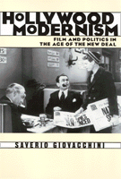

An intellectual history of the Hollywood community and its wartime films
An intellectual history of the Hollywood community and its wartime films


 An intellectual history of the Hollywood community and its wartime films
An intellectual history of the Hollywood community and its wartime films

|  |
Hollywood ModernismFilm and Politics in the Age of the New DealSaverio Giovacchinipaper EAN: 978-1-56639-863-3 (ISBN: 1-56639-863-0) |
"Giovacchini's identification of vernacular modernism in American films, the morphing of a 'middle ground' for German cinematic art, Hollywood romance, drama and comedy, is a major breakthrough. He also casts new light upon the evolution of liberalism in the film capital. Hollywood Modernism will certainly be regarded as a milestone in the new generation of film studies."
—Paul Buhle, Brown University
Hollywood culture has been dismissed as insignificant for so long that film buffs and critics might be forgiven for forgetting that for two decades an unprecedented interaction of social and cultural forces shaped American film. In this probing account of how a generation of industry newcomers attempted to use the modernist art of the cinema to educate the public in anti-Fascist ideals, Saverio Giovacchini traces the profound transformation that took place in the film industry from the 1930s to the 1950s. Rejecting the notion that European emigres and New Yorkers sought a retreat from politics or simply gravitated toward easy money, he contends that Hollywood became their mecca precisely because they wanted a deeper engagement in the project of democratic modernism.
Seeing Hollywood as a forcefield, Giovacchini examines the social networks, working relationships, and political activities of artists, intellectuals, and film workers who flocked to Hollywood from Europe and the eastern United States before and during the second world war. He creates a complex and nuanced portrait of this milieu, adding breadth and depth to the conventional view of the era's film industry as little more than an empire for Jewish moguls or the major studios. In his rendering Hollywood's newcomers joined with its established elite to develop a modernist aesthetic for film that would bridge popular and avant-garde sensibilities; for them, realism was the most effective vehicle for conveying their message and involving a mass audience in the democratic struggle for progress.
Excerpt available at www.temple.edu/tempress
"Brilliantly conceived, assiduously researched and documented, carefully written and thoughtfully structured, Hollywood Modernism should become indispensable for those interested in this period of our social and cultural history. Giovacchini articulates a theory of democratic modernism that relates to the extended era of the New Deal, the Second World War, and the Cold War...relying heavily upon a truly impressive array of primary materials that deal with film production and film history."
—Sam B. Girgus, Professor of English, Vanderbilt University, and author of Hollywood Renaissance
"The book is at its best when it focuses on movies not as they regard larger artistic movements or trends, but instead as they are developed and produced by a community with particular and often competing interests."
—The Journal of American History
"This well-argued and wide-ranging work...posits the emergence of a democratic modernism in studio-era Hollywood when two networks—the New York leftist intellectuals and the European immigrants—met in a unique but temporal confluence of cultural and political agendas."
—Scope: An Online Journal of Film Studies
Acknowledgments
Introduction: Taking Hollywood Seriously
1. Modernism, Itellectual Immigrants, and the Rebirth of Hollywood
2. Salons, Bookstores, and Anti-Nazism: The Remaking of the Hollywood Community
3. The Making of an Anti-Fascist Community
4. Hollywood Unraveled: Community and Style, 1939-1941
5. The "Only Respectable Clothes": Progressive Hollywood and Democratic Realism during World War II
6. Audiences, "People," and the Avant-Garde: The Collapse of the Hollywood Community
7. "Weary Standard-Bearers of Progress": Hollywood Progressive Cinema and the Crisis of the Hollywood Community
Conclusion: One Last Hollywood Self-Portrait
Notes
Index
 | Saverio Giovacchini is Assistant Professor of History, Bronx Community College of the City University New York. |
History
Cinema Studies
American Studies
Culture and the Moving Image, edited by Robert Sklar.
The Culture and the Moving Image series, edited by Robert Sklar, seeks to publish innovative scholarship and criticism on cinema, television, and the culture of the moving image. The series will emphasize works that view these media in their broad cultural and social frameworks. Its themes will include a global perspective on the world-wide production of images; the links between film, television, and video art; a concern with issues of race, class, and gender; and an engagement with the growing convergence of history and theory in moving image studies.
© 2015 Temple University. All Rights Reserved. This page: http://www.temple.edu/tempress/titles/1543_reg.html.